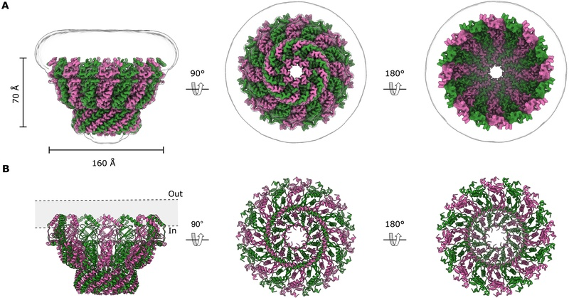

Stomatin encapsulates aquaporin-1 and urea transporter-B in the erythrocyte membrane
Vallese F., Li H., Barazzuol L., Cali T., Clarke O. B.
Science Advances (2026). DOI / PMC
We solved structures of native stomatin complexes from red blood cells, showing how they form 'domes' to capture specific transport proteins.